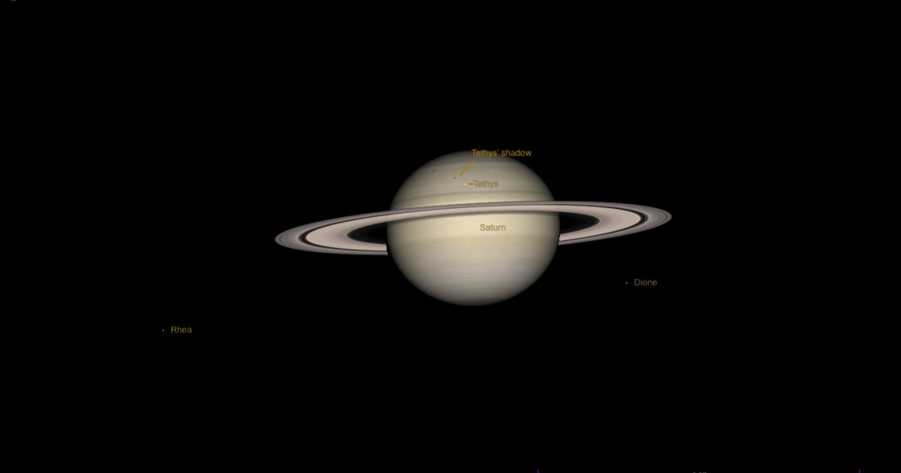

The Sky Today в воскресенье, 18 октября: еще один транзит Тетис
Ищете мероприятие Sky на этой неделе?
Ознакомьтесь с нашей полной рубрикой «Небо на этой неделе».
17 октября: Наблюдайте, как Дикие Утки Крошечная Тетис проходит через диск Сатурна, начинающийся около 21:35 по ВОСТОЧНОМУ поясному времени, наиболее легко видимый из восточной половины США.
Сатурн легко найти на Ките — это самый яркий свет.
Продолжение чтения "Небо сегодня в воскресенье, 18 октября: еще один транзит Тетис" The post The Sky Today on Sunday, October 18: Another Tethys tran